Android下的dex加固技术从最初爱加密实现的dex整体内存加载，到目前各大厂商都在研究的代码虚拟化技术，整体技术已经很成熟了。但是因为Android系统开源的特性，这种加固方法的安全性并不高，只要修改源码中dex加载的部分，就可以dump出隐藏的dex，根据这一原理目前也已经有多个Android通用脱壳机。既然dex保不住，那么就可以将安全要求较高的代码写到native层，现在加固厂商已基本都提供了对so的加固。针对so的加固有很多种方案，通常也都是混合使用。比较高级的做法是针对Android下的so加载器linker做的加固，从编译器层做混淆，甚至VMP等。本文主要一些简单的加固方法，比如针对段和函数的加密等。使用的方法来源于http://bbs.pediy.com/showthread.php?t=191649。
基础
在前面分析ELF时我们已经知道ELF文件有两种视图，在ELF被加载进内存中后，系统会通过program header table解析ELF。Android下的so加载器linker在加载so时使用的是so的执行视图，所以与section相关的成员在加载的时候并没有用处，而对于一些反编译器如IDA在解析ELF时却需要这些信息，这意味着我们可以通过修改section中的成员来对IDA等反编译器做Anti，事实上这种做法已经很常见了，各大厂商的so加固后直接拖到IDA中基本都会报一堆错的。像下面这样：
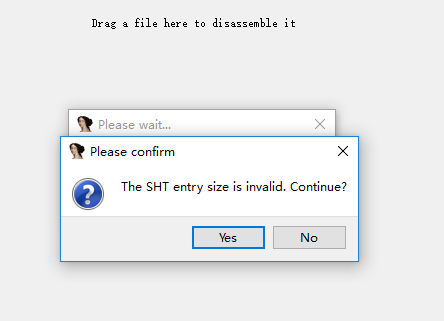
这个提示表示节区头部表的大小错误。其实实现这样的anti很简单，我们用《使用AS中进行ndk开发》中的so，然后再次用到文件格式分析神器010editor，打开libdemo.so，并运行ELF模板，定位到e_shunm字段。可以看到现在是22个，我们将它修改成25。然后保存，然后用IDA打开，就可以看到上图中的错误了。这样修改后对so的运行是没有影响的。
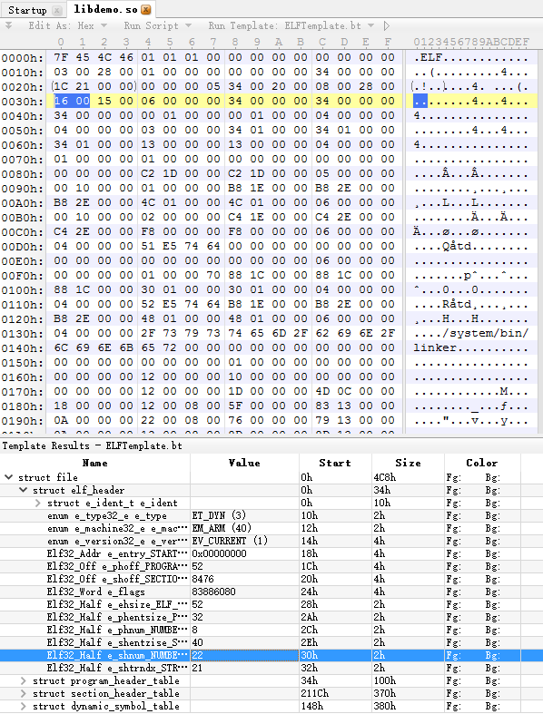
下图表示了ELF在内存中的映射。
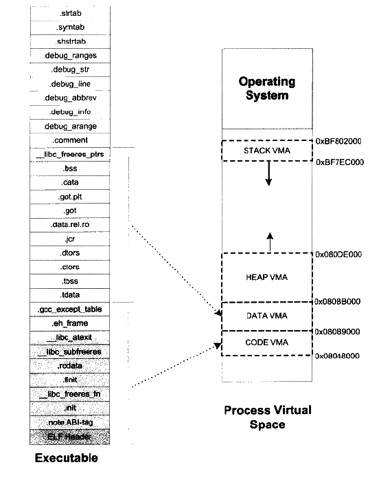
基于Section的有源码加密
我们知道在ELF中我们可以在函数或变量声明前加上1
__attribute__((section("xxxx"))) \\这里的xxxx替换成自定义section的名字
来将一个函数或者变量存放到指定的section中。然后我们可以再将自定义的section加密。具体流程如下：
- 读取elf文件头，根据e_shoff定位到节区头部表
- 根据elf文件头中的e_shnum得到节区数量
- 根据e_shoff和e_shnum读取节区头部表中的所有项
- 通过elf文件头中的e_shstrndx项得到节表字符串表在节表中的索引，然后找到节表字符串表的偏移
- 读取节表字符串表中的字符串将每一个节的名字保存起来
- 比较每一个节的名字和自定义节的名字，如果匹配则通过shdr->sh_offest和shdr->sh_zie得到自定义节的内容，并保存到content中
- 加密content
- 将content写会到原so中
看起来好像很复杂，事实上前5步在《ELF文件格式分析》最后的python脚本中已经完成了，我们只需要关注怎么加密以及怎么解密。为了简单，这里我们的加密算法使用异或算法，将加密section中的字节异或11。解密的话当然也可以按照原流程做，不过我们知道关于Section的字段是可以修改的，所以我们可以简化流程，将要加密的section的addr和length写入到这些字段中。这里我们将待加密的section的地址写入到ehdr->e_entry字段，将section的长度写入到e->sh_offset中。这样做还可使静态修复后的ELF无法运行。下面是加密的python代码：1
2
3
4
5
6
7
8
9
10
11
12
13
14
15
16
17
18
19
20
21
22
23
24def encryptContent(content):
encontent = []
for i in content:
encontent.append(chr(ord(i) ^ 11))
return encontent
def encryptSh(fd,e_hdr,sh_hdrs,sname):
sh_hdr = {}
for s in sh_hdrs:
if s['sh_name'] == sname:
sh_hdr = s
break
offset = sh_hdr['sh_offset']
size = sh_hdr['sh_size']
fd.seek(24)
fd.write(struct.pack("I",size))
fd.seek(32)
fd.write(struct.pack("I",offset))
fd.seek(offset)
content = fd.read(size)
encontent = encryptContent(content)
fd.seek(offset)
fd.write("".join(encontent))
print "encrypt complete!"
这里的加密算法很简单，仅仅是使用异或，当然在实际加固中需要使用强度更高的算法。加密之后，我们还需要在原so中增加解密代码，在运行时解密才能正常运行。首先声明一个解密函数，使用”attribute((constructor))”来将这个函数放到”.init_array”段。1
void init_getString() __attribute__((constructor));
下面是完整代码：1
2
3
4
5
6
7
8
9
10
11
12
13
14
15
16
17
18
19
20
21
22
23
24
25
26
27
28
29
30
31
32
33
34
35
36
37
38
39
40
41
42
43
44
45
46
47
48
49
50
51
52
53
54
55
56
57
58
59
60
61
62void init_getString(){
char name[15];
unsigned int nblock;
unsigned int psize;
unsigned long base;
unsigned long text_addr;
unsigned int i;
Elf32_Ehdr *ehdr;
Elf32_Shdr *shdr;
base = getLibAddr(); //得到"libdemo.so"在进程中的地址
ehdr = (Elf32_Ehdr *)base;
text_addr = ehdr->e_shoff + base; //得到待解密节的内存地址
__android_log_print(ANDROID_LOG_INFO, "JNITag", "base = 0x%lx", text_addr);
nblock = ehdr->e_entry;
psize = ehdr->e_shoff / 4096 + (ehdr->e_shoff % 4096 == 0 ? 0 : 1); //得到待解密节占用的页的大小
__android_log_print(ANDROID_LOG_INFO, "JNITag", "psize = 0x%x", psize);
if(mprotect((void *)(text_addr / PAGE_SIZE * PAGE_SIZE), 4096 * psize, PROT_READ | PROT_EXEC | PROT_WRITE) != 0){ //mprotect修改权限是以页为单位的，所以这里必须将起始地址设置为PAGE_SIZE的整数倍
__android_log_print(ANDROID_LOG_INFO, "JNITag", "mem privilege change failed");
}
for(i=0;i< nblock; i++){
char *addr = (char*)(text_addr + i);
*addr = (*addr) ^ 11;
}
if(mprotect((void *)(text_addr / PAGE_SIZE * PAGE_SIZE), 4096 * psize, PROT_READ | PROT_EXEC) != 0){
__android_log_print(ANDROID_LOG_INFO, "JNITag", "mem privilege change failed");
}
__android_log_print(ANDROID_LOG_INFO, "JNITag", "Decrypt success");
}
unsigned long getLibAddr(){
unsigned long ret = 0;
char name[] = "libdemo.so";
char buf[4096], *temp;
int pid;
FILE *fp;
pid = getpid();
sprintf(buf, "/proc/%d/maps", pid);
fp = fopen(buf, "r");
if(fp == NULL)
{
puts("open failed");
goto _error;
}
while(fgets(buf, sizeof(buf), fp)){
if(strstr(buf, name)){
temp = strtok(buf, "-");
ret = strtoul(temp, NULL, 16);
break;
}
}
_error:
fclose(fp);
return ret;
}
编译后用python脚本加密，然后生成apk，可以看到运行效果。
说明可以运行，下面我们来看下用IDA打开的效果。首先看未加密的so。
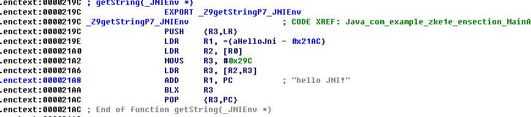
加密后用IDA打开，可以看到IDA不能正确的解析节信息，并且代码已经被加密了。
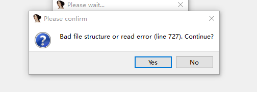
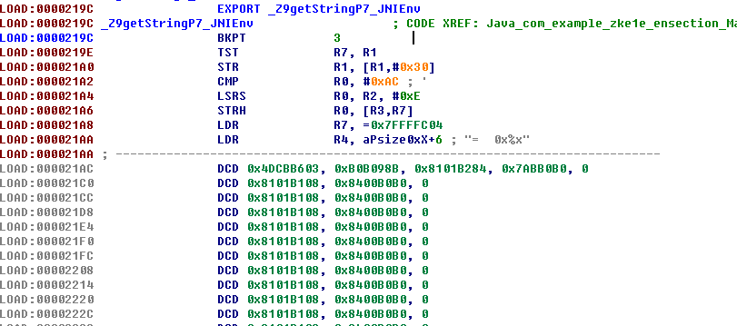
注意并不是所有节都可以被加密的。比如直接对.text加密，会把与crt有关的代码也加密。所以只能选择性的加密。
基于函数的有源码加密
上一节中我们实现了对ELF中自定义节的加密。但是自定义节很容易被发现，更好的做法是对函数进行加密。既然是对函数加密，我们就需要找到函数的地址和大小。在上一节我们可以通过”.shstrtab”来找到每一个section的”sh_name”，而ELF文件头中就有”.shstrtab”在节表中的索引，所以我们很容易就可以找到它。但是我们不能这样去查找指定的函数名。
在ELF中，每个函数的结构描述放在.dynsym中，函数的名称放在.dynstr中，我们怎么去查找它们的对应关系呢？这需要另一个段叫”.hash”的节。这个节中有一个hash表，它的结构如下图：
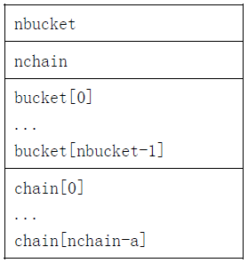
bucket数组包含nbucket个项目，chain数组包含nchain个项目，下标都是从0开始。bucket和chain中都保存了符号表的索引。chain表项和符号表存在对应。符号表项的数目应该和nchain相等，所以符号表的索引也可以用来选取chain表项。哈希函数能够接受符号名并返回一个可以用来计算bucket的索引。如果哈希函数针对某个名字返回了数值x，则bucket[x%nbucket]给出了一个索引y，该索引可用于符号表，也可用于chain表。如果该符号表项不是所需要的，那么chain[y]则给出了具有相同哈希值的下一个符号表项。我们可以沿着chain链一直搜索，直到所选中的符号表项包含了所需要的符号，或者chain项中包含值STN_UNDEF。
从名字可以看出.dynsym和.dynstr是和动态链接相关的符号表和字符串表。这个我们在《ELF文件格式分析》中的符号表和字符串表有什么不一样呢？.dynsym和.dynstr是用于动态链接的，它们的结构和..symtab和.strtab一样，但是内容是.symtab和.strtab中的一部分，就是和动态链接有关的一部分。而.symtab和.strtab在strip后会被去掉，ndk生成的so是经过strip的，未strip的so可以在/local/obj中找到。一般release版的elf文件都是经过strip的，因为不strip的elf中保存了很多debug信息是文件很容易被分析。
我们来看符号表的结构：1
2
3
4
5
6
7
8
9
10
11/* Symbol table entry. */
typedef struct
{
Elf32_Word st_name; /* Symbol name (string tbl index) */
Elf32_Addr st_value; /* Symbol value */
Elf32_Word st_size; /* Symbol size */
unsigned char st_info; /* Symbol type and binding */
unsigned char st_other; /* Symbol visibility */
Elf32_Section st_shndx; /* Section index */
} Elf32_Sym;
通过st_name就能找到我们需要的函数。
这里使用执行视图来实现加密和解密。需要注意的是如果用static声明加密函数，那么函数不会出现在”.dynsym”中，也无法在执行视图中通过函数名找到进行解密。当然也可以把函数的地址和大小写入到elf头部。这里我们要加密的是Java_com_example_zke1e_enfunc_MainActivity_getString这个函数，可以看到它是一个导出函数，所以肯定能在符号表中找到它。1
2
3
4JNIEXPORT jstring JNICALL Java_com_example_zke1e_enfunc_MainActivity_getString
(JNIEnv *env, jobject){
return (*env).NewStringUTF("Hello JNI!");
}
我们已经知道执行视图中的segment包含多个section，和section header table一样，segment也有一个头部表叫program header。它的定义如下(32位)：1
2
3
4
5
6
7
8
9
10
11
12
13/* Program segment header. */
typedef struct
{
Elf32_Word p_type; /* Segment type */
Elf32_Off p_offset; /* Segment file offset */
Elf32_Addr p_vaddr; /* Segment virtual address */
Elf32_Addr p_paddr; /* Segment physical address */
Elf32_Word p_filesz; /* Segment size in file */
Elf32_Word p_memsz; /* Segment size in memory */
Elf32_Word p_flags; /* Segment flags */
Elf32_Word p_align; /* Segment alignment */
} Elf32_Phdr;
program header仅在可执行文件和共享目标文件中存在。在程序头部中e_phentsize和e_phnum成员描述了程序头部的大小和项数。program header的各个成员说明如下：
- p_type 此数组元素描述的段的类型，或者如何解释此数组元素的信息。
- p_offset 此成员给出从文件头到该段第一个字节的偏移。
- p_vaddr 此成员给出段的第一个字节将被放到内存中的虚拟地址。
- p_paddr 此成员仅用于与物理地址相关的系统中。因为 System V 忽略所有应用程序的物理地址信息，此字段对与可执行文件和共享目标文件而言具体内容是未指定的。
- p_filesz 此成员给出段在文件映像中所占的字节数。可以为0。
- p_memsz 此成员给出段在内存映像中占用的字节数。可以为0。
- p_flags 此成员给出与段相关的标志。
- p_align 可加载的进程段的 p_vaddr 和 p_offset 取值必须合适，相对于对页面大小的取模而言。此成员给出段在文件中和内存中如何对齐。数值 0 和 1 表示不需要对齐。否则 p_align 应该是个正整数，并且是 2 的幂次数，p_vaddr 和 p_offset 对 p_align 取模后应该相等。
其中p_type的可选项如下表所示：
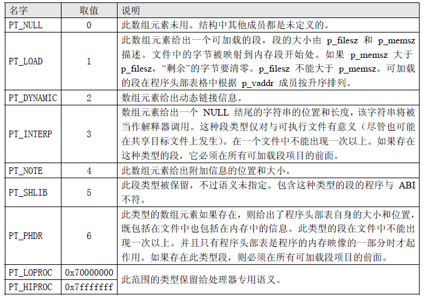
当p_type为PT_LOAD时，就表示这是一个可以加载的段。不过这里我们要关注的是PT_DYNAMIC这个类型对应的段，从名字我们就可以看到这个段是和动态链接有关的，它表示了动态链接器(即INTERP段中指定的解释器)所需要的基本信息，包括依赖的共享对象，符号的位置和重定位信息等。这个段包含了.dynamic这个section，这个节的数据结构如下：1
2
3
4
5
6
7
8
9
10
11/* Dynamic section entry. */
typedef struct
{
Elf32_Sword d_tag; /* Dynamic entry type */
union
{
Elf32_Word d_val; /* Integer value */
Elf32_Addr d_ptr; /* Address value */
} d_un;
} Elf32_Dyn;
对于每个这种类型的结构，d_tag控制了d_un的解释含义：
- d_val 此 Elf32_Word 对象表示一个整数值，可以有多种解释。
- d_ptr 此 Elf32_Addr 对象代表程序的虚拟地址。如前所述，文件的虚拟地址可能与执行过程中的内存虚地址不匹配。在解释包含于动态结构中的地址时，动态链接程序基于原来文件值和内存基地址计算实际地址。为了保持一致性，文件中不包含用来“纠正”动态结构中重定位项地址的重定位项目。
下面的表格总结了可执行文件和共享目标文件对标志的要求。如果标志被标记为“必需”，那么符合ABI规范的文件的动态链接数组必须包含一个该类型表项。“可选”意味着该标志可以出现，但不是必需的。
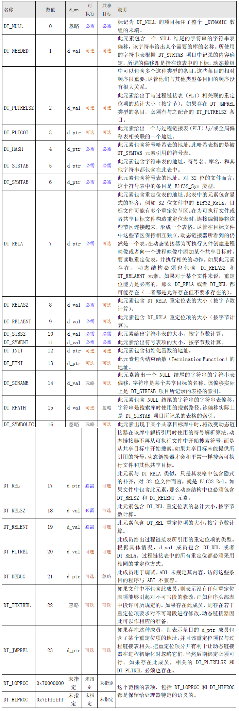
- 没有出现在此表中的标记值是保留的。
- 除了数组末尾的 DT_NULL 元素以及 DT_NEEDED 元素的相对顺序约束以外，其他项目可以以任意顺序出现。
这个表格很长，通过上面的内容我们知道这里需要关注DT_SYMTAB，DT_HASH，DT_STRTAB，DT_STRSZ这几种类型的节。我们查看表，可以看到对于DT_SYMTAB，DT_HASH，DT_STRTAB这三种类型，d_ptr给出了它们对应的表的地址，对于DT_STRSZ，d_ptr给出了字符串表的大小。找到这几个表后，就可以找到我们想找到的函数了。再来梳理下具体的流程：
- 读取文件头，获取e_phoff、e_phentsize 和e_phnum 信息
- 通过Elf32_Phdr 中的p_type 字段，找到DYNAMIC(也就是.dynamic段)。从p_offset 和p_filesz 字段得到文件中的起始位置和长度
- 遍历.dynamic，找到.dynsym、.dynstr、.hash section 文件中的偏移和.dynstr的大小。
根据函数名称，计算hash 值。可以从bonic/linker.c中找到hash值得计算方法。
1
2
3
4
5
6
7
8unsigned long elf_hash (const unsigned char *name) {
unsigned long h = 0, g; while (*name)
{
h=(h<<4)+*name++; if (g = h & 0xf0000000)
h^=g>>24; h&=-g;
}
return h;
}根据hash 值，找到下标hash % nbuckets 的bucket；根据bucket 中的值，读取.dynsym 中的对应索引的Elf32_Sym 符号；从符号的st_name 所以找到在.dynstr 中对应的字符串与函数名进行比较。若不等，则根据chain[hash % nbuckets]找下一个Elf32_Sym 符号，直到找到或者chain 终止为止。
- 找到函数对应的Elf32_Sym 符号后，即可根据st_value 和st_size 字段找到函数的位置和大小。
- 后面就是加密函数的内容了，和上节相同。
下面是具体实现的代码：1
2
3
4
5
6
7
8
9
10
11
12
13
14
15
16
17
18
19
20
21
22
23
24
25
26
27
28
29
30
31
32
33
34
35
36
37
38
39
40
41
42
43
44
45
46
47
48
49
50
51
52
53
54
55
56
57
58
59
60
61
62
63dynamic_hdr = {}
dyn_hash = {}
dyn_strtab = {}
dyn_symtab = {}
dyn_strsz = {}
for ph_hdr in ph_hdrs:
if ph_hdr['p_type'] == 2:
dynamic_hdr = ph_hdr
break
dynamic_offset = dynamic_hdr['p_offset']
dynamic_size = dynamic_hdr['p_filesz']
dynamic_entsize = 8
fd.seek(dynamic_offset)
dynamic_num = dynamic_size / dynamic_entsize
fields_dyn = ['d_tag','value']
for i in range(dynamic_num):
data = fd.read(dynamic_entsize)
if len(data) != dynamic_entsize:
print "Read .dynamic information failed"
exit(0)
dyn_hdr = dict(zip(fields_dyn,struct.unpack('II',data)))
if dyn_hdr['d_tag'] == 4:
dyn_hash = dyn_hdr
elif dyn_hdr['d_tag'] == 5:
dyn_strtab = dyn_hdr
elif dyn_hdr['d_tag'] == 6:
dyn_symtab = dyn_hdr
elif dyn_hdr['d_tag'] == 10:
dyn_strsz = dyn_hdr
fd.seek(dyn_strtab['value'])
strtab = fd.read(dyn_strsz['value'])
fhash = elfhash(fname)
fd.seek(dyn_hash['value'])
nbucket = struct.unpack('I',fd.read(4))[0]
nchain = struct.unpack('I',fd.read(4))[0]
fhash = fhash % nbucket
fd.seek(fhash * 4,1)
findex = struct.unpack('I',fd.read(4))[0]
symtab_entsize = 16
fd.seek(dyn_symtab['value'] + findex * symtab_entsize)
fields_sym = ['st_name','st_value','st_size','st_info','st_other','st_shndx']
data = fd.read(symtab_entsize)
fsym = dict(zip(fields_sym,struct.unpack('IIIcch',data)))
if strtab[fsym['st_name']:].split('\0')[0] != fname:
while True:
fd.seek(dyn_hash['value'] + 4 * (2 + nbucket + findex))
findex = struct.unpack('I',fd.read(4))[0]
if findex == 0:
print "Cannot find function"
exit(0)
fd.seek(dyn_symtab['value'] + findex * symtab_entsize)
data = fd.read(symtab_entsize)
fsym = dict(zip(fields_sym,struct.unpack('IIIcch',data)))
if strtab[fsym['st_name']:].split('\0')[0] == fname:
break
print fsym['st_value']
print fsym['st_size']
fd.seek(fsym['st_value'] - 1)
content = fd.read(fsym['st_size'] - 1)
encontent = encryptContent(content)
fd.seek(fsym['st_value'] - 1)
fd.write("".join(encontent))
print "complete!"
我们先来看看未加密的so，用IDA打开查看Java_com_example_zke1e_enfunc_MainActivity_getString函数：
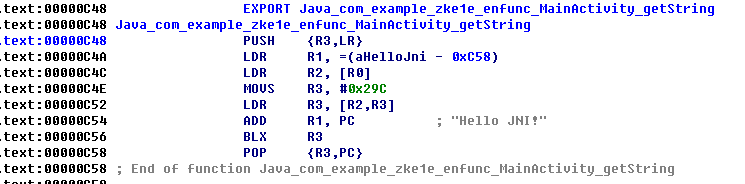
然后使用py脚本加密，然后再打开，可以看到加密成功。
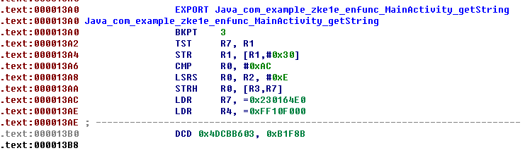
当然我们还需要在so中加入解密的代码才能运行。解密的流程和加密大致相同。这里就不展开叙述了。具体实现可以看代码。1
2
3
4
5
6
7
8
9
10
11
12
13
14
15
16
17
18
19
20
21
22
23
24
25
26
27
28
29
30
31
32
33
34
35
36
37
38
39
40
41
42
43
44
45
46
47
48
49
50
51
52
53
54
55
56
57
58
59
60
61
62
63
64
65
66
67
68
69
70
71
72
73
74
75
76
77
78
79
80
81
82
83
84
85
86
87
88static char getTargetFuncInfo(unsigned long base, const char *funcName, funcInfo *info){
char flag = -1, *dynstr;
int i;
Elf32_Ehdr *ehdr;
Elf32_Phdr *phdr;
Elf32_Off dyn_vaddr;
Elf32_Word dyn_size, dyn_strsz;
Elf32_Dyn *dyn;
Elf32_Addr dyn_symtab, dyn_strtab, dyn_hash;
Elf32_Sym *funSym;
unsigned funHash, nbucket;
unsigned *bucket, *chain;
ehdr = (Elf32_Ehdr *)base;
phdr = (Elf32_Phdr *)(base + ehdr->e_phoff);
// __android_log_print(ANDROID_LOG_INFO, "JNITag", "phdr = 0x%p, size = 0x%x\n", phdr, ehdr->e_phnum);
for (i = 0; i < ehdr->e_phnum; ++i) {
// __android_log_print(ANDROID_LOG_INFO, "JNITag", "phdr = 0x%p\n", phdr);
if(phdr->p_type == PT_DYNAMIC){
flag = 0;
print_debug("Find .dynamic segment");
break;
}
phdr ++;
}
if(flag)
goto _error;
dyn_vaddr = phdr->p_vaddr + base;
dyn_size = phdr->p_filesz;
__android_log_print(ANDROID_LOG_INFO, "JNITag", "dyn_vadd = 0x%x, dyn_size = 0x%x", dyn_vaddr, dyn_size);
flag = 0;
for (i = 0; i < dyn_size / sizeof(Elf32_Dyn); ++i) {
dyn = (Elf32_Dyn *)(dyn_vaddr + i * sizeof(Elf32_Dyn));
if(dyn->d_tag == DT_SYMTAB){
dyn_symtab = (dyn->d_un).d_ptr;
flag += 1;
__android_log_print(ANDROID_LOG_INFO, "JNITag", "Find .dynsym section, addr = 0x%x\n", dyn_symtab);
}
if(dyn->d_tag == DT_HASH){
dyn_hash = (dyn->d_un).d_ptr;
flag += 2;
__android_log_print(ANDROID_LOG_INFO, "JNITag", "Find .hash section, addr = 0x%x\n", dyn_hash);
}
if(dyn->d_tag == DT_STRTAB){
dyn_strtab = (dyn->d_un).d_ptr;
flag += 4;
__android_log_print(ANDROID_LOG_INFO, "JNITag", "Find .dynstr section, addr = 0x%x\n", dyn_strtab);
}
if(dyn->d_tag == DT_STRSZ){
dyn_strsz = (dyn->d_un).d_val;
flag += 8;
__android_log_print(ANDROID_LOG_INFO, "JNITag", "Find strsz size = 0x%x\n", dyn_strsz);
}
}
if((flag & 0x0f) != 0x0f){
print_debug("Find needed .section failed\n");
goto _error;
}
dyn_symtab += base;
dyn_hash += base;
dyn_strtab += base;
dyn_strsz += base;
funHash = elfhash(funcName);
funSym = (Elf32_Sym *) dyn_symtab;
dynstr = (char*) dyn_strtab;
nbucket = *((int *) dyn_hash);
bucket = (unsigned int *)(dyn_hash + 8);
chain = (unsigned int *)(dyn_hash + 4 * (2 + nbucket));
flag = -1;
__android_log_print(ANDROID_LOG_INFO, "JNITag", "hash = 0x%x, nbucket = 0x%x\n", funHash, nbucket);
for(i = bucket[funHash % nbucket]; i != 0; i = chain[i]){
__android_log_print(ANDROID_LOG_INFO, "JNITag", "Find index = %d\n", i);
if(strcmp(dynstr + (funSym + i)->st_name, funcName) == 0){
flag = 0;
__android_log_print(ANDROID_LOG_INFO, "JNITag", "Find %s\n", funcName);
break;
}
}
if(flag) goto _error;
info->st_value = (funSym + i)->st_value;
info->st_size = (funSym + i)->st_size;
__android_log_print(ANDROID_LOG_INFO, "JNITag", "st_value = %d, st_size = %d", info->st_value, info->st_size);
return 0;
_error:
return -1;
}
运行效果如下：
UPX加壳
最后讲讲使用UPX给so加壳，爱加密就是通过UPX给so加壳，然后将so中的”UPX”字符串修改成AJM。首先需要下载编译UPX的源码。
upx3.92的源代码地址：https://www.pysol.org:4443/hg/upx.hg/tags
upx3.92版修复了upx加固android下的so运行的问题。但是upx官方的版本是3.91，加固so会有问题。所以需要自己下载源码编译。详情可以看下面这篇帖子：
http://sourceforge.net/p/upx/bugs/223/?page=0
下载好源码后还需要下载一些依赖库，具体如下：
LZMA4.43：http://nchc.dl.sourceforge.net/project/sevenzip/LZMA%20SDK/4.43/lzma443.tar.bz2
UCL1.03：http://www.oberhumer.com/opensource/ucl/download/ucl-1.03.tar.gz)
ZLIB1.2.3：http://pkgs.fedoraproject.org/repo/pkgs/zlib/zlib-1.2.3.tar.gz/debc62758716a169df9f62e6ab2bc634/zlib-1.2.3.tar.gz
将这几个包都放到在一起后解压。然后编译zlib，将生成的lib放到/usr/lib64目录下。1
2
3cd zlib-1.2.3
make
cp libz.a /usr/lib
进入upx目录编译。编译过程中可能会出现下面这样的错误。
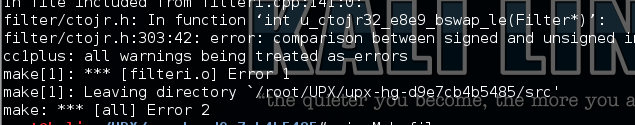
可能还会遇到和ucl相关的错误，我的做法是进ucl目录编译一次 然后将生成的libucl.a也放到/usr/lib64目录下
进入upx-hg-d9e7cb4b5485/src/目录，编辑Makefile，注释掉一这句话就可以了。
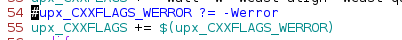
然后下面的命令编译。1
CXX=g++ UPX_UCLDIR=~/UPX/ucl-1.03 UPX_LZMADIR=~/UPX/lzma443 UPX_LZMA_VERSION=0x443 make all
这里”~/UPX/“替换成自己的目录
如果没有出错，就会在src目录生成一个upx.out文件。将这个文件拷贝出来，然后对我们的so加固。但是需要注意的是，upx对压缩的文件的大小有限制，好像小于10kb就不能压缩，会提示”NotCompressibleException”，另外还需要加壳的文件中有INIT段，否则会提示”UnknownExecutableFormatException”。添加init段的代码如下：1
2void _init(void){} \\c++
extern "C" {void _init(void){}} \\c
准备就绪后就可以使用upx.out压缩了，命令如下：1
./upx.out -o libdemo_upx.so libdemo.so
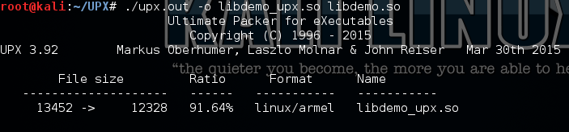
我们使用IDA打开加壳后的so，可以发现已经隐藏了原来的代码了。
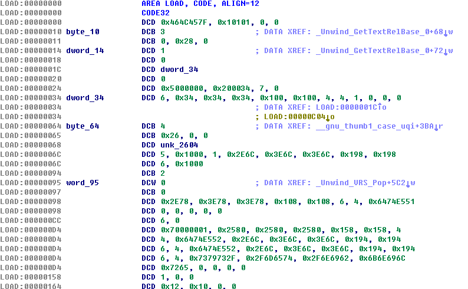
将加壳后的so放到libs目录替换原so，然后生成apk就可以了。不过这里我加壳后的so无法运行会报这样的错：
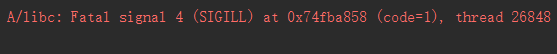
但是给可执行文件加壳是可以运行的，如果有知道的朋友还请告知原因。
总结
针对段和函数的加密，虽说能有效的防止静态分析，但是如果动态分析就基本没有用了，上面说了这几种方法，一条dd命令就可以还原出解密后的so了。当然更有效的做法是对调用关键函数前解密，调用后再次加密。但是也可以将断点设置在调用函数的过程中dump内存来获取解密的so，所以又要涉及到anti-debug的手段了。当然了，没有绝对安全的系统，再大强度的加固也只是为了提高破解的成本，而加固和破解技术也在不断的攻于防中进化。